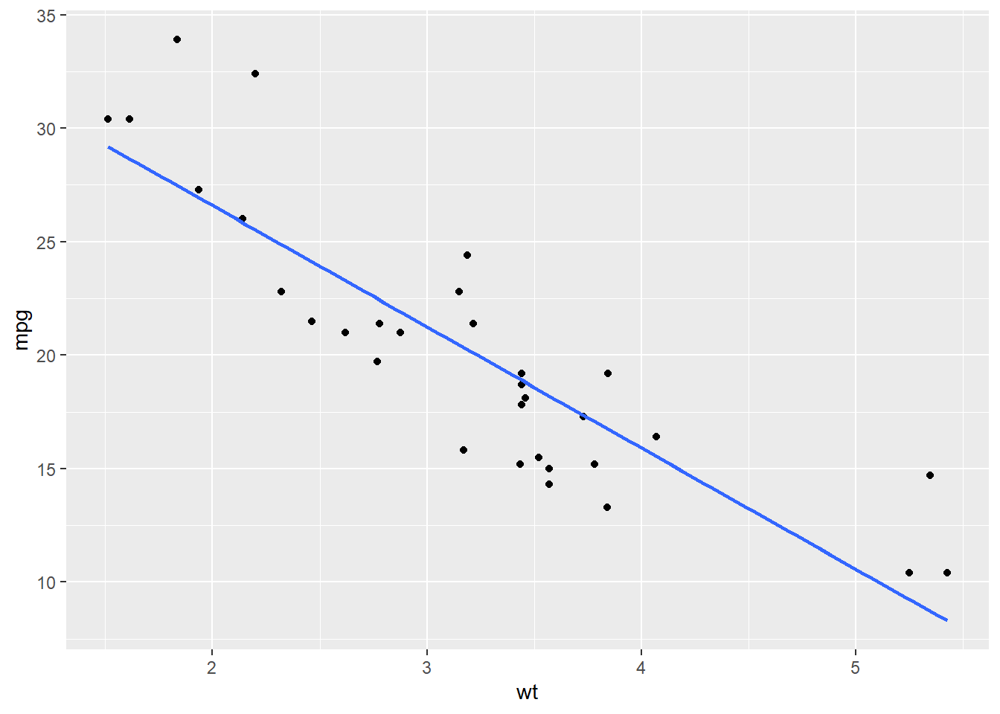
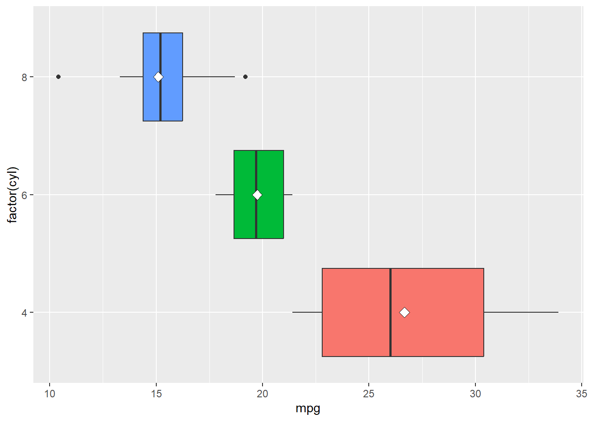
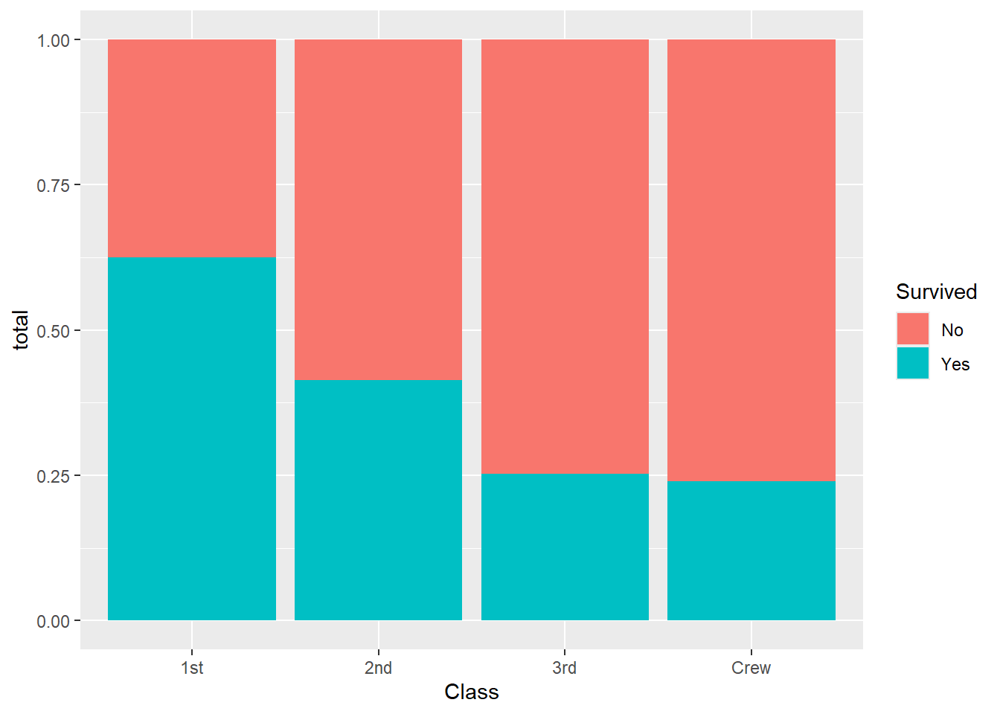

library(ggplot2)
ggplot(mtcars, aes(x = wt, y = mpg)) +
geom_point()
At this point, we have already used EDA to become familiar with a dataset. We have checked for missing values, cleaned and transformed variables when needed, and used dplyr and ggplot to begin exploring patterns in the data. We have also looked at how to describe a single variable by discussing its center, spread, and shape. The next step is to move from looking at one variable at a time to looking at how two variables behave together. This is called bivariate analysis. Instead of asking what one variable looks like by itself, we now ask questions such as: Does one variable tend to increase as another increases? Do different groups have different distributions? Are two categorical variables related? When we describe a relationship between two variables, we are usually interested in the overall pattern, the strength of the relationship, whether unusual observations are present, and how clearly we can communicate what the data suggests.
dplyr and ggplot to summarize and visualize bivariate relationships.When both variables are quantitative, we usually want to understand whether there is a relationship between them. In particular, we want to know whether larger values of one variable tend to go with larger values of the other, smaller values of the other, or neither. The most natural way to begin is with a scatterplot.
library(ggplot2)
ggplot(mtcars, aes(x = wt, y = mpg)) +
geom_point()
When describing a scatterplot, we will focus on four things:
In the plot above, we would say there is a negative relationship between weight and miles per gallon because as the weight of a car increases, fuel efficiency tends to decrease. The form looks roughly linear, and the relationship appears fairly strong. A common mistake is to simply say “they are related” without being specific. We want to describe the relationship in enough detail that someone reading our analysis could picture what the plot looks like.
A numerical summary that helps describe a linear relationship (both in direction and strength) between two quantitative variables is the correlation. This can be shown mathematically as:
\[ r = \frac{\sum_{i=1}^n (x_i-\bar{x})(y_i-\bar{y})}{\sqrt{\sum_{i=1}^n (x_i-\bar{x})^2}\sqrt{\sum_{i=1}^n (y_i-\bar{y})^2}} = \frac{\operatorname{cov}(X,Y)}{s_X s_Y} \]
This formula tells us how strongly two quantitative variables move together in a linear way. The numerator, \(\operatorname{cov}(X,Y)\), measures whether the variables tend to increase together or if one tends to increase while the other decreases. The denominator, \(s_X s_Y\) (the product of the standard deviations), standardizes this value by dividing by the spread of both variables. Because of this standardization, correlation is unitless and always falls between \(-1\) and \(1\).
If \(r\) is positive, then larger values of one variable tend to be associated with larger values of the other. If \(r\) is negative, then larger values of one variable tend to be associated with smaller values of the other. Values of \(r\) close to \(0\) indicate little to no linear relationship, while values close to \(-1\) or \(1\) indicate a strong linear relationship.
cor(mtcars$wt, mtcars$mpg)[1] -0.8676594It is important to remember that correlation only measures linear relationships. Two variables could have a strong curved relationship and still have a correlation near 0. It is also important to remember that correlation can be strongly influenced by outliers, which is why we should always pair a numerical summary with a visualization.
Once we have created a scatterplot, it is often helpful to add a trend line in order to better see the overall pattern in the relationship. In ggplot, we can do this by adding geom_smooth(method = "lm", se = FALSE). The method = "lm" tells R to draw the least-squares regression line, and se = FALSE removes the shaded confidence band so that we can focus on the line itself.
ggplot(mtcars, aes(x = wt, y = mpg)) +
geom_point() +
geom_smooth(method = "lm", se = FALSE)
The trend line gives us a simple summary of the direction of the relationship. In this example, the line slopes downward from left to right, which suggests a negative relationship between weight and miles per gallon. In other words, as the weight of a car increases, its fuel efficiency tends to decrease. We should be careful, however, not to over-interpret this line. Adding a regression line does not prove that the relationship is perfectly linear, nor does it prove that one variable causes the other. It is simply a helpful visual tool that summarizes the overall trend in the data.
When looking at a scatterplot with a trend line, we should still ask ourselves the same questions as before:
In this example, the points follow a fairly clear downward trend, so the line gives a reasonable summary of the relationship.
After creating a visualization, the next step is to describe the relationship in words. A strong written summary should mention the direction, form, and strength of the relationship, along with any unusual features if they are present. For this scatterplot, a good summary would be:
There is a strong negative, roughly linear relationship between car weight and miles per gallon. Heavier cars tend to get worse gas mileage, and the points follow a fairly clear downward trend with only a moderate amount of scatter.
Notice that this summary does more than just say the variables are “related”. It tells us that the direction is negative, the form is roughly linear, and the strength appears fairly strong.
Sometimes we are interested in how a quantitative variable changes across groups. In this setting, one variable is quantitative and the other is categorical. For example, we may want to compare miles per gallon across different numbers of cylinders. To start off our analysis we should first calculate summary statistics for the different groups.
library(dplyr)
mtcars |>
group_by(cyl) |>
summarise(n = n(),
mean_mpg = mean(mpg),
median_mpg = median(mpg),
sd_mpg = sd(mpg))# A tibble: 3 × 5
cyl n mean_mpg median_mpg sd_mpg
<dbl> <int> <dbl> <dbl> <dbl>
1 4 11 26.7 26 4.51
2 6 7 19.7 19.7 1.45
3 8 14 15.1 15.2 2.56These summaries allow us to compare the groups numerically. The mean and median give us information about the center of each group, while the standard deviation gives us a sense of the spread. The sample size is also important, since some groups may contain more observations than others. While numerical summaries are useful, they do not show the full picture by themselves. In order to better understand how the groups differ, we should also visualize the distributions.
A side-by-side boxplot is often a good choice for this type of comparison. In the plot below, we also add a point for the mean of each group. This allows us to compare both the median, which is already built into the boxplot, and the mean, which is shown with the white diamond.
ggplot(mtcars, aes(x = mpg, y = factor(cyl))) +
geom_boxplot(aes(fill = factor(cyl))) +
stat_summary(fun = "mean", geom = "point", shape = 23, size = 3, fill = "white", color="black") +
theme(legend.position="none")
Recall that a boxplot gives us several pieces of information at once:
By adding the mean as a point, we gain one more useful comparison. If the mean and median are close together, that suggests the group may be fairly symmetric. If the mean is noticeably different from the median, then that may suggest skewness or the presence of unusual values pulling the mean in one direction.
When we describe this kind of plot, we are usually asking:
In this example, the 4-cylinder cars tend to have the highest miles per gallon, while the 8-cylinder cars tend to have the lowest. The 6-cylinder cars fall in between. This suggests that fuel efficiency differs across cylinder groups.
We can also compare the mean dots to the median lines. If the mean sits close to the median, then the distribution within that group may be fairly balanced. If the mean is noticeably to one side of the median, then the data may be skewed within that group. This gives us a little more insight than a boxplot alone.
Another important thing to notice is the amount of overlap. Even though the groups have different centers, they are not completely separated. Some cars in one group may still have similar miles per gallon values to cars in another group. This is why we should be careful not to overstate the differences based only on the picture.
After making the plot, we want to describe what we notice in clear words. A good written summary should explain how the groups differ and whether those differences seem small or substantial. For this example, a reasonable summary would be:
Miles per gallon differs noticeably across cylinder groups. Cars with 4 cylinders tend to have the highest fuel efficiency, while cars with 8 cylinders tend to have the lowest. The centers of the groups are clearly different, although there is still some overlap in the overall distributions.
Notice that this type of summary is different from the case where both variables were quantitative. We are no longer describing the relationship using positive or negative direction. Instead, we are comparing the distributions of a quantitative variable across several groups.
When both variables are categorical, our goal is to determine whether there is an association between them. In other words, we want to know whether knowing the category of one variable gives us information about the likely category of the other variable. For example, in the Titanic dataset, we might ask whether passenger class is associated with survival. Since both Class and Survived are categorical variables, this is a two-categorical-variable situation.
The Titanic dataset is a little unusual because it is already stored as a table of counts rather than as a regular data frame where each row represents one passenger. To make it easier to work with, we can first convert it to a data frame and then summarize the total number of passengers in each combination of passenger class and survival outcome, group by Class and Survived, and then add up the frequencies.
Titanic_df <- as.data.frame(Titanic)
Titanic_df |>
group_by(Class, Survived) |>
summarise(total = sum(Freq)) |>
ungroup()# A tibble: 8 × 3
Class Survived total
<fct> <fct> <dbl>
1 1st No 122
2 1st Yes 203
3 2nd No 167
4 2nd Yes 118
5 3rd No 528
6 3rd Yes 178
7 Crew No 673
8 Crew Yes 212These are the raw counts that are useful, but they do not tell the whole story because the classes are not all the same size. For example, there were many more crew members than first-class passengers, so we should be careful about comparing counts alone.
When the group sizes are different, proportions are often more helpful than raw counts. Instead of asking how many passengers survived in each class, we should ask what proportion of each class survived. We can calculate those proportions by first summarizing the totals and then dividing within each class.
Titanic_df |>
group_by(Class, Survived) |>
summarise(total = sum(Freq)) |>
group_by(Class) |>
mutate(prop = total / sum(total))# A tibble: 8 × 4
# Groups: Class [4]
Class Survived total prop
<fct> <fct> <dbl> <dbl>
1 1st No 122 0.375
2 1st Yes 203 0.625
3 2nd No 167 0.586
4 2nd Yes 118 0.414
5 3rd No 528 0.748
6 3rd Yes 178 0.252
7 Crew No 673 0.760
8 Crew Yes 212 0.240This allows us to compare the survival rate within each class rather than just comparing the total number of survivors.
A good graph for comparing proportions across categories is a segmented bar chart. We can create one in ggplot by using position = "fill".
Titanic_df |>
group_by(Class, Survived) |>
summarise(total = sum(Freq)) |>
ggplot(aes(x = Class, y = total, fill = Survived)) +
geom_col(position = "fill")
In this graph, each bar has the same height, so we are comparing proportions rather than counts. This makes it easier to see how survival differed across the classes.
When describing the relationship between two categorical variables, we should ask:
If the proportions are about the same across all groups, then there may be little association. If the proportions are noticeably different, then the variables appear to be related. After creating the table and graph, we want to describe the relationship clearly in words. A good summary for this example would be:
Survival appears to be associated with passenger class. First-class passengers had a much higher proportion of survivors than third-class passengers or crew members. This suggests that survival was not distributed evenly across the different passenger classes.
Notice that we are careful with our wording. We say the variables are associated, not that one directly caused the other. In most datasets, especially observational ones, we should avoid jumping straight to causal conclusions.
One of the most important ideas in bivariate analysis is that a relationship in the data does not automatically imply causation. If two variables are associated, it means they move together in some way. It does not mean that one variable causes the other as there may be other variables involved, or the relationship may be observational rather than experimental.
Because of this, we should be careful with our language. In most EDA settings, instead of making direct causal claims it is better to say:
At this point, we have started building the habit of matching the visualization to the variable types:
The graph should make the relationship easier to interpret, not harder. Therefore, the labels should be clear, categories should be readable, and you should be able to explain why the graph is appropriate. Most people tend to skip the explanations and only look at the visualization, so we should make sure it is as informative as possible.
When describing a bivariate relationship, we should always begin by identifying the variable types. Once we know the variable types, we can choose an appropriate summary and visualization.
The goal is not just to make a plot or calculate a number. The goal is to communicate what the relationship looks like in a clear and meaningful way. As we move forward, these ideas will prepare us for more formal modeling techniques. For now, our emphasis remains on describing the relationship, identifying patterns, and supporting our conclusions with both numerical summaries and visual evidence.